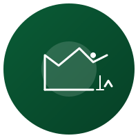
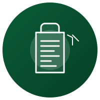
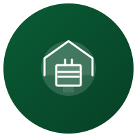
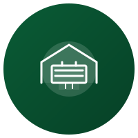

Ahorro Mensual
Calcula cuánto acumularás mes a mes
Total acumulado:
RD$ 60,000
Calcula préstamos, ahorro e inversiones fácilmente. Educación financiera para dominicanos.
Comenzar ahoraEn FinanzasRD creemos que todos los dominicanos merecen tomar decisiones financieras informadas. Por eso creamos herramientas gratuitas, contenido educativo y comparativas objetivas —todo diseñado específicamente para la realidad económica de nuestro país.
Creado por Carlos Miguel Echavarría Rodríguez, Ingeniero en Sistemas (UTESA) y educador financiero.
Tasa actualizada automáticamente en vivo. Calcula el valor exacto al instante.
Herramientas precisas para tomar mejores decisiones financieras en RD
Calcula cuánto acumularás mes a mes
Proyecta el crecimiento de tu inversión
Distribuye tus ingresos en necesidades, deseos y ahorro
Calcula tu cuota mensual exacta
Compara las mejores opciones financieras de RD lado a lado
| Cooperativa | Tasa % | Plazo (meses) | Beneficio (RD$) | |
|---|---|---|---|---|
Compara las tasas actuales de productos financieros en República Dominicana
| Producto | Entidad | Tasa % | Plazo | Ganancia Estimada |
|---|---|---|---|---|
| Cuenta Ahorro | Banreservas | 1.5% | Mensual | RD$ 1,500 |
| Cuenta Ahorro | Banco Popular | 1.2% | Mensual | RD$ 1,200 |
| Certificado Financiero | BHD | 8.5% | 12 meses | RD$ 8,500 |
| Certificado Financiero | Banreservas | 7.8% | 12 meses | RD$ 7,800 |
| Ahorro Cooperativa | Coop Popular | 10.0% | Mensual | RD$ 10,000 |
| Ahorro Cooperativa | Coop La Nacional | 9.5% | Mensual | RD$ 9,500 |
| Ahorro Cooperativa | Coopsano | 10.5% | Mensual | RD$ 10,500 |
| Préstamo Personal | Banreservas | 15.0% | 24 meses | — |
| Préstamo Personal | Banco Popular | 16.5% | 24 meses | — |
| Préstamo Personal | Scotiabank | 18.0% | 24 meses | — |
| Tarjeta Crédito | Banreservas | 2.5% mensual | revolving | — |
| Tarjeta Crédito | Banco Popular | 2.8% mensual | revolving | — |
| Tarjeta Crédito | BHD | 2.6% mensual | revolving | — |
* Tasas referenciales sujetas a cambios. Verifica con cada entidad. Fuentes: Banco Central de la RD, Superintendencia de Bancos, sitios web oficiales de cada entidad. Consultadas: mayo 2026.
Consejos prácticos para tus finanzas personales en República Dominicana
Guía completa con estrategias, tabla de cuentas de ahorro y ejemplos prácticos para dominicanos.
Aprende a identificar los gastos hormiga que más afectan tu bolsillo y estrategias para reducirlos.
Aprende a construir un colchón financiero que te proteja ante imprevistos. Paso a paso con metas en RD$.
Comparativa de tasas, requisitos y beneficios de las cuentas de ahorro en los principales bancos de RD.
Cómo planificar y alcanzar metas de ahorro para casa, viaje, educación y más en República Dominicana.
Diferencias clave, comisiones, rendimientos y recomendaciones para cada tipo de cuenta bancaria.
Guía para padres: enseña a tus hijos a administrar dinero con actividades prácticas y cuentas infantiles.
Los 7 errores que más cometen los dominicanos con su dinero y cómo evitarlos con estrategias prácticas.
Crea un presupuesto mensual con la regla 50/30/20 adaptada a RD. Incluye tabla de ejemplo y herramientas digitales.
Método bola de nieve, avalancha y consolidación. Incluye tabla de simulación de pagos.
Identifica las señales de alerta del sobreendeudamiento y recupera tu salud financiera a tiempo.
Estrategias comprobadas para negociar tasas, comisiones y deudas con bancos dominicanos.
Guía completa sobre la ley de quita y espera en República Dominicana: requisitos y proceso.
¿Cuándo conviene refinanciar? Análisis de costos, beneficios y calculadora para tomar la mejor decisión.
Comparativa de Coop Popular, Coop La Nacional, Coop Mype y Coopsano. Tasas, requisitos y beneficios.
Guía paso a paso para asociarte a una cooperativa: requisitos, documentos y beneficios de ser socio.
Comparativa detallada entre bancos y cooperativas: tasas, beneficios, riesgos y cuál elegir según tu perfil.
La nueva forma de ahorrar e invertir: apps, apertura de cuentas online y beneficios digitales.
Aprende a calcular la cuota mensual de cualquier préstamo con la fórmula financiera.
Comparativa de préstamos personales en bancos y cooperativas dominicanas. Tasas, plazos y requisitos.
Todo sobre créditos hipotecarios en RD. Tasas, requisitos, simulaciones y consejos para comprar vivienda.
Opciones de financiamiento para pequeños negocios dominicanos. Comparativa de tasas y requisitos.
Ventajas, desventajas y cuándo elegir cada tipo de tasa de interés en préstamos dominicanos.
Impacto en la cuota mensual, interés total y cómo elegir el plazo ideal para tu préstamo.
Comparativa de tarjetas, tasas, beneficios y cómo elegir la mejor según tus hábitos de gasto.
Guía para principiantes: requisitos, tasas, beneficios y errores que evitar al solicitar tu primera tarjeta.
Cómo aprovechar al máximo los programas de recompensas de tarjetas de crédito dominicanas.
Las mejores opciones de tarjetas sin costo anual en República Dominicana. Comparativa y requisitos.
Comparativa de beneficios, costos y requisitos entre tarjetas premium y clásicas en RD.

Opciones de inversión accesibles desde montos pequeños: fondos, cooperativas, certificados y más.
Tipos de fondos, rentabilidad, riesgos y cómo empezar a invertir. Comparativa de las mejores opciones.
Guía para invertir en certificados financieros. Tasas actualizadas, plazos y mejores bancos en RD.
Guía para principiantes sobre cómo invertir en propiedades en República Dominicana.
Todo sobre criptomonedas en RD: exchanges, riesgos, oportunidades y cómo empezar a invertir.
Cómo funciona la BVRD, cómo invertir, comisiones y oportunidades para principiantes.
Estrategias de diversificación, activos refugio y oportunidades de inversión defensiva.

Factores que afectan el tipo de cambio USD/DOP. Tabla histórica y perspectivas para 2026.
Factores que influyen en la subida del dólar: inflación, remesas, turismo y políticas del Banco Central.
Comparativa para ahorrar e invertir: tasas, tendencias y recomendaciones según tu perfil.
Análisis de la inflación en RD y estrategias para proteger tus ahorros ante la pérdida de poder adquisitivo.
Comparativa de las mejores opciones para transferencias internacionales en República Dominicana.
Dónde encontrar la mejor tasa de cambio USD/DOP en Santo Domingo. Comparativa de casas de cambio.
Guía para entender y mejorar tu puntuación crediticia en República Dominicana. Consejos prácticos.
Comparativa de seguros de vida en RD. Tipos, coberturas, precios y cómo elegir el mejor.
Plan paso a paso para alcanzar la libertad financiera viviendo en República Dominicana.

Guía básica de impuestos: quién debe declarar, fechas clave, formularios y deducciones.

Comparativa de rentabilidad, comisiones y servicios de las AFP dominicanas.
Aprende a calcular tu pensión de jubilación: factores clave, fórmula y cómo maximizar tu retiro.
Guía completa: requisitos, montos, plazos y proceso para solicitar el retiro de AFP por desempleo.
Guía para cambiarte de AFP: compara rentabilidad, comisiones y proceso de traspaso paso a paso.
Edad legal, jubilación anticipada, pensión mínima y cómo planificar tu retiro en RD.

Tasas, comisiones, banca en línea y servicio al cliente de los principales bancos dominicanos.
Guía para bancarizarse: requisitos, productos básicos y beneficios de estar en el sistema formal.
Apps de pago, billeteras digitales, neobancos y cómo la tecnología está transformando las finanzas en RD.
¿Preguntas o sugerencias? Escríbenos
En FinanzasRD respetamos tu privacidad. No recopilamos información personal sin tu consentimiento. Los datos ingresados en las calculadoras se procesan localmente en tu navegador y no se almacenan ni comparten con terceros.
Podemos usar cookies de terceros (como Google AdSense) para mostrar anuncios personalizados. Al usar este sitio, aceptas nuestra política de privacidad.
Las herramientas financieras proporcionadas en FinanzasRD son solo para fines informativos y educativos. Los cálculos son aproximados y no constituyen asesoría financiera profesional. Siempre consulta con un experto antes de tomar decisiones financieras importantes.
El uso de este sitio web implica la aceptación de estos términos.